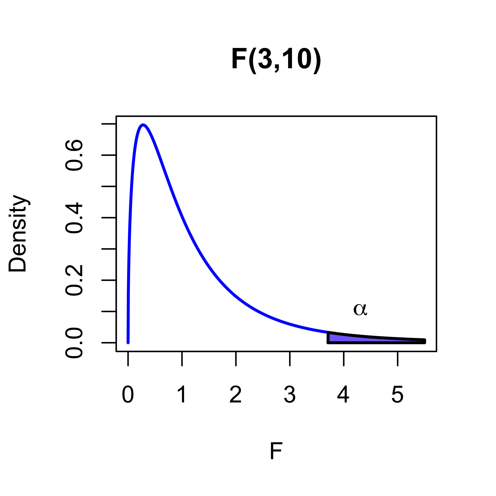
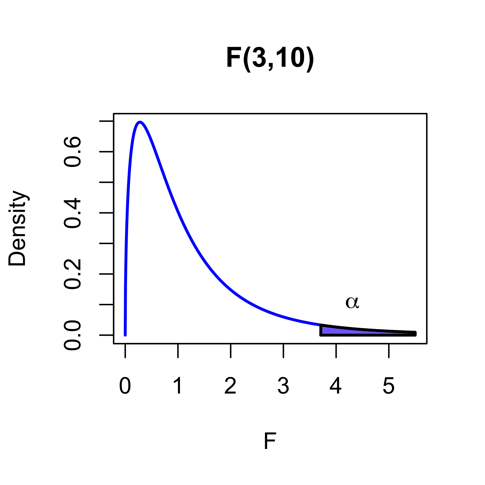
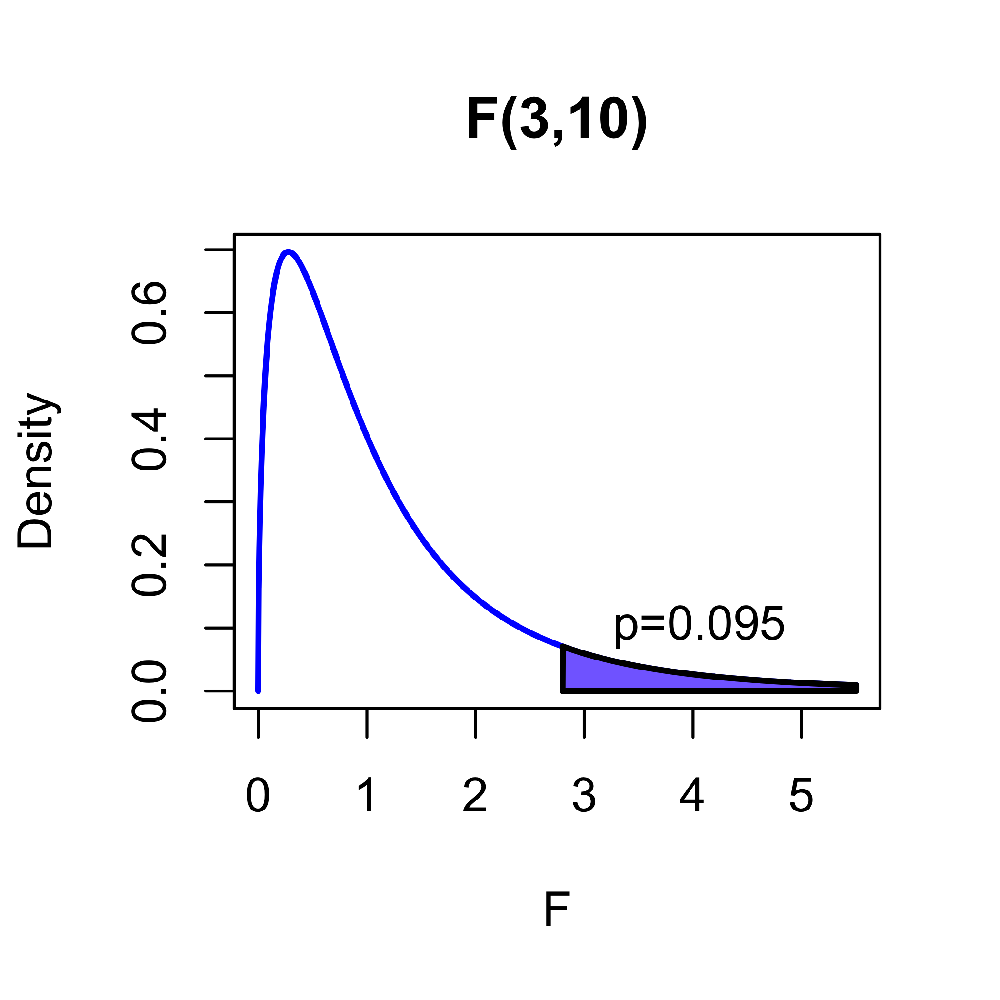

STA 721: Lecture 13
Duke University
Hypothesis Testing:
The hypothesis of no effects
Testing submodels
Readings:
Suppose we believe the model \[ {\text{M1}} \quad \quad\mathbf{Y}= \mathbf{X}\boldsymbol{\beta}+ \boldsymbol{\epsilon}\quad \quad \boldsymbol{\epsilon}\sim \textsf{N}(0, \sigma^2 \mathbf{I}_n) \] but hypothesize that there is no effect of the \(\mathbf{X}\) variables on \(\mathbf{Y}\)
If this were true, then the distribution for \(\mathbf{Y}\) would be \[ \quad \quad \quad \quad \quad {\text{ M0}} \quad \quad \mathbf{Y}= \boldsymbol{\epsilon}\quad \quad \boldsymbol{\epsilon}\sim \textsf{N}(0, \sigma^2 \mathbf{I}_n) \]
For M1, the distribution of \(\mathbf{Y}\) is a collection of normal distributions with \(\boldsymbol{\mu}\in C(\mathbf{X})\) and Covariance a scalar multiple of the \(\mathbf{I}\)
the distributions for the data \(\mathbf{Y}\) under M0 is a subset of the distributions under M1 or submodel of M1 with \(\boldsymbol{\mu}= \mathbf{0}\)
Observations \(\mathbf{Y}\) may give us evidence that supports or rejects our hypothesis that the null model, M0, is true
Our goals are to
Procedure based on the following steps:
If \(\hat{\boldsymbol{\beta}}\approx \boldsymbol{\beta}\) then
if \(\boldsymbol{\beta}= \mathbf{0}\), then \(\mathbf{X}\hat{\boldsymbol{\beta}}\approx \mathbf{0}\)
if \(\boldsymbol{\beta}\ne \mathbf{0}\), then \(\mathbf{X}\hat{\boldsymbol{\beta}}\not \approx \mathbf{0}\)
If the null model M0 is correct, then \(\|\mathbf{X}\hat{\boldsymbol{\beta}}\|^2\) should be small
If incorrect, \(\|\mathbf{X}\hat{\boldsymbol{\beta}}\|^2\) should be big
We need to quantify this intuition
\[\begin{align*} \mathbf{X}\hat{\boldsymbol{\beta}}& = \mathbf{P}_{\mathbf{X}} \mathbf{Y}\\ & = \mathbf{X}\boldsymbol{\beta}+ \mathbf{P}\boldsymbol{\epsilon} \end{align*}\]
\[\begin{align*} \|\mathbf{X}\hat{\boldsymbol{\beta}}\|^2 & = (\mathbf{X}\boldsymbol{\beta}+ \mathbf{P}\boldsymbol{\epsilon})^T(\mathbf{X}\boldsymbol{\beta}+ \mathbf{P}\boldsymbol{\epsilon}) \\ & = \boldsymbol{\beta}^T \mathbf{X}^T \mathbf{X}\boldsymbol{\beta}+ 2 \boldsymbol{\beta}^T \mathbf{X}^T \mathbf{P}\boldsymbol{\epsilon}+ \boldsymbol{\epsilon}^T \mathbf{P}\boldsymbol{\epsilon}\\ & = \| \mathbf{X}\boldsymbol{\beta}\|^2 + 2 \boldsymbol{\beta}^T \mathbf{X}^T \boldsymbol{\epsilon}+ \boldsymbol{\epsilon}^T \mathbf{P}\boldsymbol{\epsilon} \end{align*}\]
How big is \(\|\mathbf{X}\hat{\boldsymbol{\beta}}\|^2\) on average? How big do we expect it to be under our two models?
Take expectations:
\[\begin{align*} \textsf{E}[\|\mathbf{X}\hat{\boldsymbol{\beta}}\|^2] & = \|\mathbf{X}\boldsymbol{\beta}\|^2 + \textsf{E}[2 \boldsymbol{\beta}^T \mathbf{X}^T \boldsymbol{\epsilon}] + \textsf{E}[\boldsymbol{\epsilon}^T \mathbf{P}\boldsymbol{\epsilon}] \\ & = \|\mathbf{X}\boldsymbol{\beta}\|^2 + 0 + \sigma^2 \textsf{tr}(\mathbf{P}) = \|\mathbf{X}\boldsymbol{\beta}\|^2 + \sigma^2 p \end{align*}\]
If we knew \(\sigma^2\), then
if \(\|\mathbf{X}\hat{\boldsymbol{\beta}}\|^2/p \approx \sigma^2\), we might decide M0 would be reasonable
if \(\|\mathbf{X}\hat{\boldsymbol{\beta}}\|^2/p \gg \sigma^2\), then we might decide M0 is unreasonable
But we do not know \(\sigma^2\)
if we estimate \(\sigma^2\) by \(s^2 = \frac{\mathbf{Y}^T(\mathbf{I}- \mathbf{P})\mathbf{Y}}{n - p}\), then
if \(\|\mathbf{X}\hat{\boldsymbol{\beta}}\|^2/p \approx s^2\), we might decide M0 would be reasonable
if \(\|\mathbf{X}\hat{\boldsymbol{\beta}}\|^2/p \gg s^2\), then we might decide M0 is unreasonable
Note: if the null model M0 is correct (\(\boldsymbol{\beta}= \mathbf{0}\)), then both
are unbiased estimates of \(\sigma^2\)
If the null model is not correct, but the linear model M1 is correct, then
\(s^2\) is still an unbiased estimate of \(\sigma^2\)
\(\|\mathbf{X}\hat{\boldsymbol{\beta}}\|^2/p\) is expected to be bigger than \(\sigma^2\)
We can use the ratio of the two quantities to form a test statistic \[t(\mathbf{Y}, \mathbf{X}) = \frac{\|\mathbf{X}\hat{\boldsymbol{\beta}}\|^2/p}{\textsf{SSE}/(n-p)} = \frac{\textsf{RSS}/p}{\textsf{SSE}/(n-p)}\]
\(\textsf{RSS}\) is the regression or model sum of squares
so under the null model M0 (\(\boldsymbol{\beta}= \mathbf{0}\)), we have
\(\textsf{SSE}\sim \sigma^2 \chi^2_{n-p}\)
\(\|\mathbf{X}\hat{\boldsymbol{\beta}}\|^2 \sim \sigma^2 \chi^2_p\)
they are statistically independent (why?)
so the ratio \[\begin{align*} t(\mathbf{Y}, \mathbf{X}) & = \frac{\textsf{RSS}/p}{\textsf{SSE}/(n-p)} = \frac{(\textsf{RSS}/\sigma^2)/p}{(\textsf{SSE}/\sigma^2)/(n-p)} \\ & \mathrel{\mathop{=}\limits^{\rm D}}\frac{\chi^2_p/p}{\chi^2_{n-p}/(n-p)} \quad \text{ is independent of } \sigma^2 \end{align*}\] is independent of \(\sigma^2\)
We will accept M0 that \(\boldsymbol{\beta}= \mathbf{0}\) unless \(F(\mathbf{Y})\) is large compared to an \(F_{p,n−p}\) distribution.
accept M0: \(\boldsymbol{\beta}= \mathbf{0}\) if \(F(\mathbf{Y}) < F_{p,n−p,1−\alpha}\)
\(F_{p,n−p,1−\alpha}\) is the \(1 − \alpha\) quantile of a \(F_{p,n−p}\)
reject M0: \(\boldsymbol{\beta}= \mathbf{0}\) if \(F(\mathbf{Y}) > F_{p,n−p,1−\alpha}\)
the probability that we reject M0 when it is true, is \[\begin{align*} \Pr( \text{ reject M0} & \mid \text{ M0 true})\\ & = \Pr(F(\mathbf{Y}) > F_{p,n−p,1−\alpha} \mid \boldsymbol{\beta}= \mathbf{0}) \\ & = \alpha \end{align*}\]

Instead of just declaring that M0 is true or false, statistical analyses report how extreme \(F(\mathbf{Y})\) is compared to its null distribution.
This is usually reported in terms of the p-value:
the value \(p \in(0,1)\) such that \(F(\mathbf{Y})\) is the \((1−p)\) quantile of the \(F_{p,n−p}\) distribution
the probability that a random variable \(F \sim F_{p,n−p}\) is larger than the observed value \(F(\mathbf{Y})\), if the null model is true
it is not the \(\Pr(\text{M0 is true})\) based on the observed data

We are usually not interested in testing that all of the coefficients are zero if there is an intercept in the model
But we can use the same idea to test submodels
We assume the Gaussian Linear Model \[\quad \quad \quad \quad \quad \quad \quad \quad M1 \quad \mathbf{Y}∼ \textsf{N}(\mathbf{W}\boldsymbol{\alpha}+ \mathbf{X}\boldsymbol{\beta}, \sigma^2\mathbf{I}) \equiv \textsf{N}(\mathbf{Z}\boldsymbol{\theta}, \sigma^2\mathbf{I})\] where \(\mathbf{W}\) is \(n \times q\), \(\mathbf{X}\) is \(n \times p\), \(\mathbf{Z}= [\mathbf{W}\mathbf{X}]\),
We wish to evaluate the hypothesis \(\boldsymbol{\beta}= \mathbf{0}\)
equivalent to comparing M1 to M0: \[M0 \quad \mathbf{Y}∼ \textsf{N}(\mathbf{W}\boldsymbol{\alpha}, \sigma^2\mathbf{I})\]
Devise a test statistic and procedure by
fitting the full model M1 \(\mathbf{Y}\sim \textsf{N}(\mathbf{W}\boldsymbol{\alpha}+ \mathbf{X}\boldsymbol{\beta}, \sigma^2\mathbf{I})\)
fitting the reduced/null model M0 \(\mathbf{Y}\sim \textsf{N}(\mathbf{W}\boldsymbol{\alpha}, \sigma^2\mathbf{I})\)
accept M0 if the null model fits about as well as the full model
reject M0 if the null model fits much worse than the full model
measure fit through \(\textsf{SSE}_{M0}\) and \(\textsf{SSE}_{M1}\) \[\begin{align*} \textsf{SSE}_{M1} & = \min_{\boldsymbol{\alpha}, \boldsymbol{\beta}} \|\mathbf{Y}- (\mathbf{W}\boldsymbol{\alpha}+ \mathbf{X}\boldsymbol{\beta})\|^2 \\ & = \min_{\boldsymbol{\theta}} \|\mathbf{Y}- \mathbf{Z}\boldsymbol{\theta}\|^2 = \mathbf{Y}^T(\mathbf{I}- \mathbf{P}_{\mathbf{Z}})\mathbf{Y}\\ \textsf{SSE}_{M0} & = \min_{\boldsymbol{\alpha}} \|\mathbf{Y}- \mathbf{W}\boldsymbol{\alpha}\|^2 = \mathbf{Y}^T(\mathbf{I}- \mathbf{P}_{\mathbf{W}})\mathbf{Y}\\ \end{align*}\]
Approach 1: accept/choose the null model if \(\textsf{SSE}_{M0} < \textsf{SSE}_{M1}\), and choose the full model if \(\textsf{SSE}_{M1} < \textsf{SSE}_{M0}\).
Approach 2: instead reject M1 \(\boldsymbol{\beta}= \mathbf{0}\) if \(\textsf{SSE}_{M0}\) is much bigger than \(\textsf{SSE}_{M1}\).
Need:
Distribution under the full model M1 \[ \textsf{SSE}_{M1} = \mathbf{Y}^T(\mathbf{I}- \mathbf{P}_{\mathbf{Z}})\mathbf{Y}\sim \sigma^2 \chi^2_{n - q - p}\]
Distribution under the null model M0 \[\textsf{SSE}_{M0} = \mathbf{Y}^T(\mathbf{I}- \mathbf{P}_{\mathbf{W}})\mathbf{Y}\sim \sigma^2 \chi^2_{n - q}\]
Rewrite \((\mathbf{I}- \mathbf{P}_{\mathbf{W}})\mathbf{Y}\) under M1: \[\begin{align*} (\mathbf{I}- \mathbf{P}_{\mathbf{W}})\mathbf{Y}& = (\mathbf{I}- \mathbf{P}_{\mathbf{W}})(\mathbf{W}\boldsymbol{\alpha}+ \mathbf{X}\boldsymbol{\beta}+ \boldsymbol{\epsilon}) \\ & = (\mathbf{I}- \mathbf{P}_{\mathbf{W}})\mathbf{X}\boldsymbol{\beta}+ (\mathbf{I}- \mathbf{P}_{\mathbf{W}})\boldsymbol{\epsilon} \end{align*}\]
compute \(\textsf{E}[\textsf{SSE}_{M0}]\) under M1: \[\begin{align*} \textsf{E}[\mathbf{Y}^T(\mathbf{I}- \mathbf{P}_{\mathbf{W}})\mathbf{Y}] & = \boldsymbol{\beta}^T\mathbf{X}^T(\mathbf{I}- \mathbf{P}_{\mathbf{W}})\mathbf{X}\boldsymbol{\beta}+ \textsf{E}[\boldsymbol{\epsilon}^T(\mathbf{I}- \mathbf{P}_{\mathbf{W}})\boldsymbol{\epsilon}] \\ & = \boldsymbol{\beta}^T\mathbf{X}^T(\mathbf{I}- \mathbf{P}_{\mathbf{W}})\mathbf{X}\boldsymbol{\beta}+ \sigma^2 \textsf{tr}(\mathbf{I}- \mathbf{P}_{\mathbf{W}}) \\ & = \boldsymbol{\beta}^T\mathbf{X}^T(\mathbf{I}- \mathbf{P}_{\mathbf{W}})\mathbf{X}\boldsymbol{\beta}+ \sigma^2(n - q) \end{align*}\]
under M0, both \(\textsf{SSE}_{M0}/(n-q)\) and \(\textsf{SSE}_{M1}/(n- q - p)\) are unbiased estimates of \(\sigma^2\)
but does the ratio \(\frac{\textsf{SSE}_{M0}/(n-q)}{\textsf{SSE}_{M1}/(n- q - p)}\) have a F distribution?
Rewrite \(\textsf{SSE}_{M0}\): \[\begin{align*} \textsf{SSE}_{M0} & = \mathbf{Y}^T(\mathbf{I}- \mathbf{P}_{\mathbf{W}})\mathbf{Y}\\ & = \mathbf{Y}^T(\mathbf{I}- \mathbf{P}_{\mathbf{Z}} + \mathbf{P}_{\mathbf{Z}} - \mathbf{P}_{\mathbf{W}})\mathbf{Y}\\ & = \mathbf{Y}^T(\mathbf{I}- \mathbf{P}_{\mathbf{Z}})\mathbf{Y}+ \mathbf{Y}^T(\mathbf{P}_{\mathbf{Z}} - \mathbf{P}_{\mathbf{W}})\mathbf{Y}\\ & = \textsf{SSE}_{M1} + \mathbf{Y}^T(\mathbf{P}_{\mathbf{Z}} - \mathbf{P}_{\mathbf{W}})\mathbf{Y} \end{align*}\]
Extra Sum of Squares: \[\textsf{SSE}_{M0} - \textsf{SSE}_{M1} = \mathbf{Y}^T(\mathbf{P}_{\mathbf{Z}} - \mathbf{P}_{\mathbf{W}})\mathbf{Y}\]